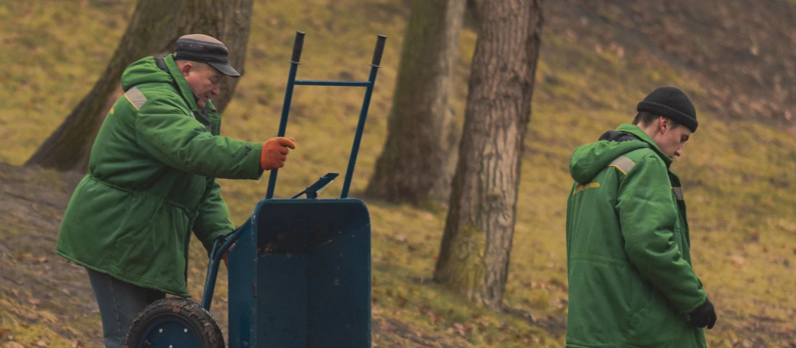
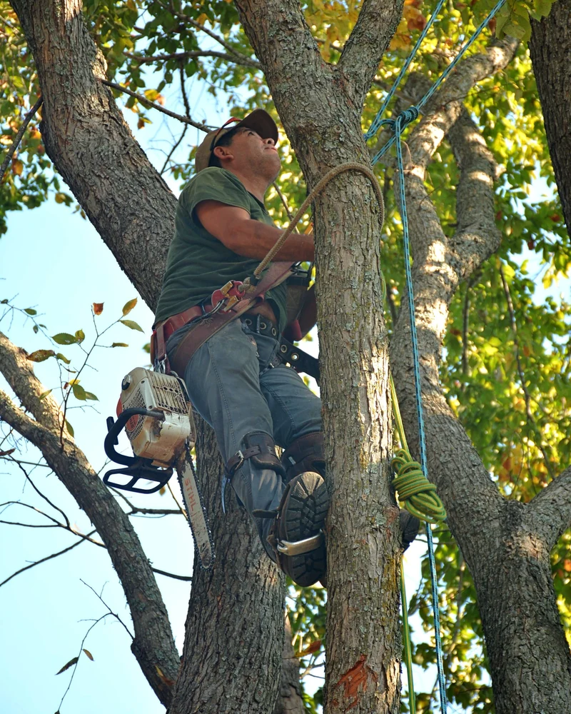

La visite
Nous regardons l'arbre depuis le pied, puis depuis la rue et depuis chez le voisin quand c'est possible. L'accès conditionne la méthode.
L'entreprise est installée 1 avenue de Bellevue, à Mérignac. Nous travaillons sur les arbres de jardin et de propriété, dans la métropole bordelaise. Le métier consiste autant à savoir couper qu'à savoir ne pas couper.

Photo d'illustrationUn arbre n'est pas un massif de haies. Chaque coupe laisse une plaie que l'arbre devra refermer seul, et il n'y parvient pas toujours. Nous coupons donc le moins possible, au bon endroit, et nous expliquons pourquoi.
Cela veut dire refuser certaines demandes. L'étêtage, qui consiste à sectionner le tronc à mi-hauteur, produit des rejets fragiles et fragilise durablement le sujet. Nous proposons à la place une réduction de couronne, décrite sur la page élagage et taille douce.
Cela veut dire aussi reconnaître quand un arbre est en fin de vie. Un tronc creux au collet ou un champignon lignivore au pied change complètement le diagnostic. Dans ce cas, l'abattage est la réponse honnête.
Avant toute proposition chiffrée, nous venons voir. La hauteur, l'accès, la proximité du bâti et l'état sanitaire se jugent sur place, pas au téléphone.
Le gérant exerce ce métier depuis 2006. L'entreprise réalise aujourd'hui plus de 220 chantiers par an, et plus de 160 interventions ont été menées depuis le mois de janvier. [[À CONFIRMER : parcours du gérant et formation suivie]]

Photo d'illustration[[À CONFIRMER : nombre de personnes dans l'équipe]]
Le déroulé varie peu d'un chantier à l'autre. Ce qui change, c'est le temps passé sur chaque étape.
Nous regardons l'arbre depuis le pied, puis depuis la rue et depuis chez le voisin quand c'est possible. L'accès conditionne la méthode.
Il détaille la prestation, l'évacuation si vous la souhaitez et la remise en état du terrain. Rien n'est ajouté ensuite sans votre accord.
Balisage de la zone, protection des massifs et du mobilier, information des voisins quand la coupe se fait au-dessus d'une limite.
Grimpe sur corde ou nacelle selon la configuration. Les sections descendent en rétention, c'est-à-dire retenues par une corde, quand la chute libre est impossible.
Broyage des branches, découpe des grumes, nettoyage du sol. Le terrain est rendu utilisable le jour même.
Harnais, cordes de travail et de sécurité. La technique permet d'atteindre les parties hautes sans engin, donc sans abîmer la pelouse.
Poulies et cordes de descente pour poser les sections au sol plutôt que les laisser tomber. Indispensable au-dessus d'une toiture ou d'une véranda.
Les branches passent au broyeur sur place. Le volume à évacuer diminue nettement et les copeaux peuvent rester en paillage.
Elle attaque la souche par fraisage progressif, sous le niveau du sol. Voir la page dessouchage et rognage.
Employée quand l'arbre est dépérissant et que la grimpe devient risquée, ou quand le temps d'accès le justifie.
Casque, protections auditives, pantalon anti-coupure et chaussures de sécurité, pour toute l'équipe, sur chaque chantier.
[[À CONFIRMER : marques et modèles du matériel, présence ou non d'une nacelle en propre]]
L'élagage figure parmi les activités les plus exposées du secteur paysager. Une branche mal évaluée pèse plus lourd qu'elle n'en a l'air, et une corde mal placée déplace la charge au mauvais endroit.
La préparation compte donc autant que l'exécution. Nous balisons la zone de travail, nous écartons les personnes présentes et nous prévoyons toujours une voie de repli au sol.
Un particulier qui monte lui-même dans un arbre avec une tronçonneuse prend un risque disproportionné. C'est la raison principale pour laquelle ce travail se confie.
Une assurance responsabilité civile professionnelle couvre les interventions. L'attestation est communiquée sur demande, avant le début du chantier.
[[À CONFIRMER : nom de l'assureur, numéro de contrat et étendue des garanties]]
Les certificats et les habilitations détenus par l'équipe seront listés ici une fois les justificatifs transmis.
[[À CONFIRMER : certificat de spécialisation taille et soins aux arbres, habilitations travail en hauteur, autres qualifications]]
Une assurance responsabilité civile professionnelle couvre les interventions. L'attestation vous est communiquée sur demande, avant le début du chantier.
[[À CONFIRMER : nom de l'assureur et numéro de contrat]]
Nous intervenons chez les particuliers, ainsi que pour des copropriétés, des syndics et des entreprises. Les demandes de collectivités s'étudient selon le volume et le calendrier.
[[À CONFIRMER : références professionnelles et marchés publics éventuels]]
Les branches sont broyées et les grumes découpées. Vous choisissez de garder le bois sur place ou de le faire évacuer. L'évacuation est chiffrée séparément sur le devis.
Le détail figure sur la page évacuation des déchets verts.
Les chantiers réalisés sont regroupés sur une page, avec les photos avant et après.
Douze communes de la métropole ont leur page, avec les contraintes propres à chacune.